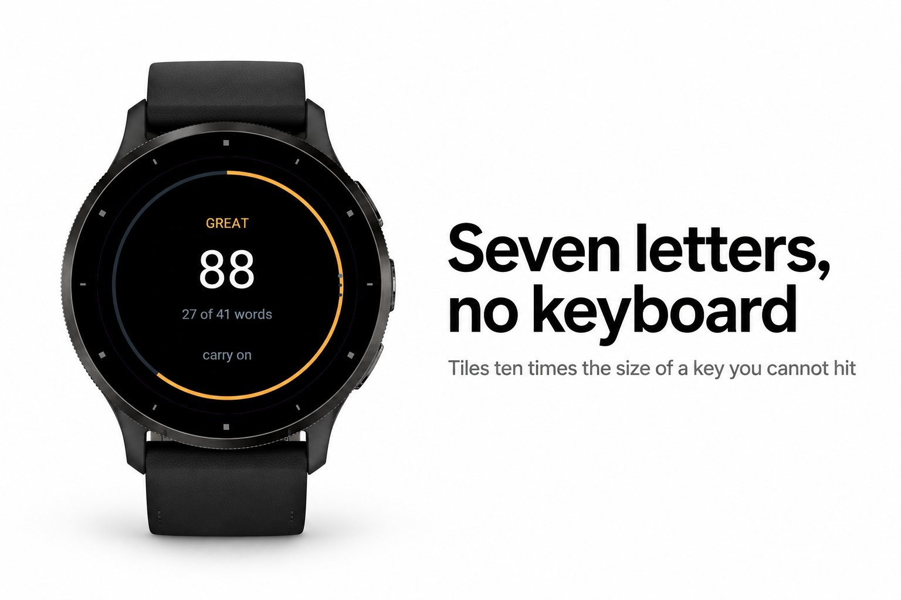
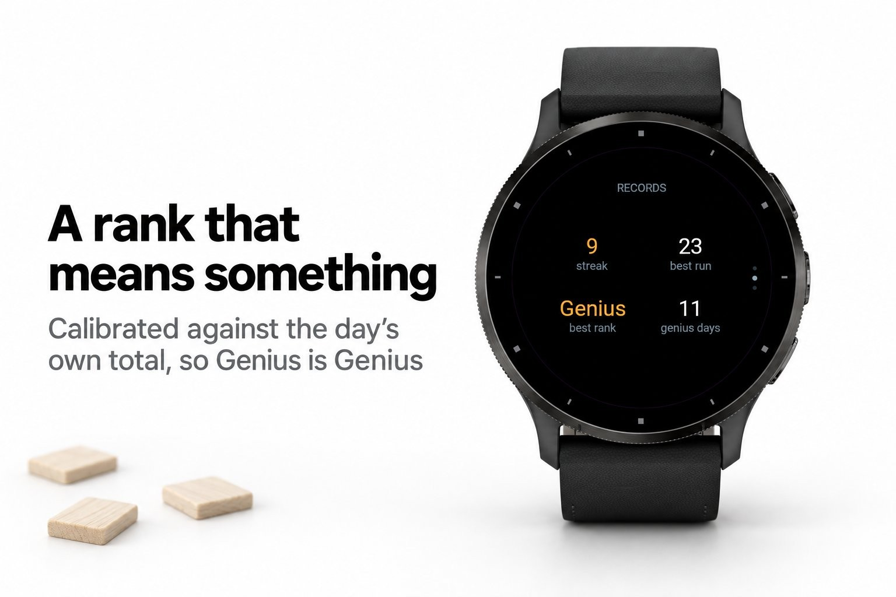
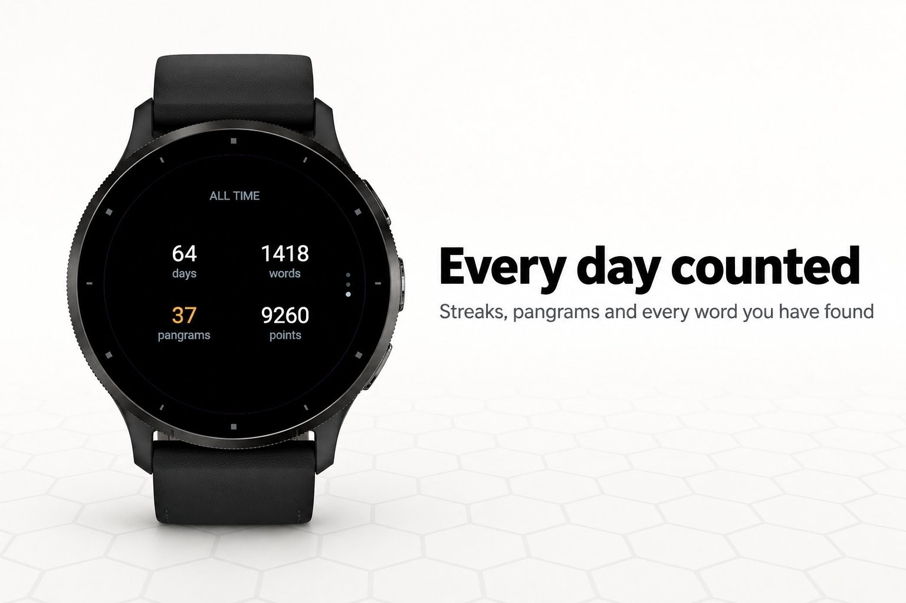
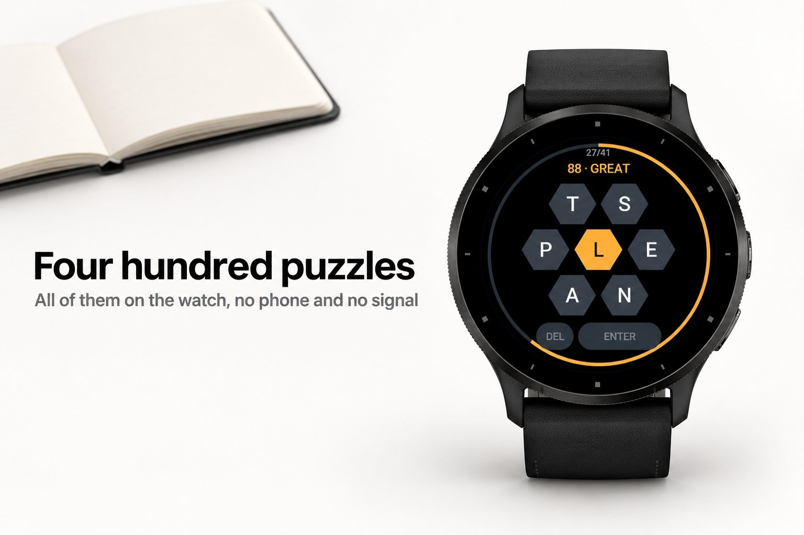
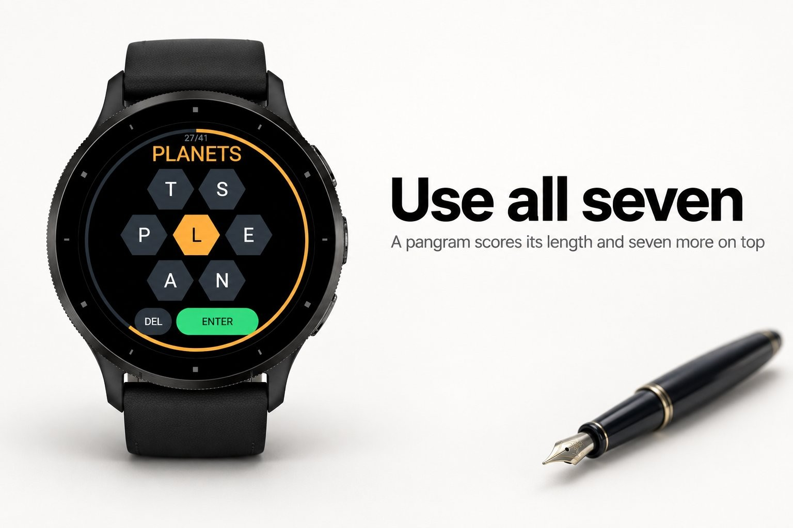

Games & puzzles · Device app
Seven big letters, no keyboard, 400 ready puzzles.





The most-reviewed word game on this platform is a Wordle clone, and the reviews all say
the same thing: the letters are too small to hit. A twenty-six key keyboard on a 45 mm
watch leaves each key about three millimetres of glass, which is half a fingertip. That
is not difficulty. That is a typo, then another one, and then the app is uninstalled.
Lexil has no keyboard. There are seven letters and nothing else: six on a ring and one
in the middle, each tile about a fifth of the screen across and roughly ten times the
target area of a key. Words run from four letters up, any letter may be used again, and
every word has to use the one in the middle, which is what stops seven big buttons from
being a small game. Using all seven in a single word is a pangram and pays seven extra.
total, so Great means the same amount of work on a twenty-word day as on a forty
so a rank cannot be reached by grinding out the easy words
lifetime points
Nothing but the watch. No phone, no signal, no account.